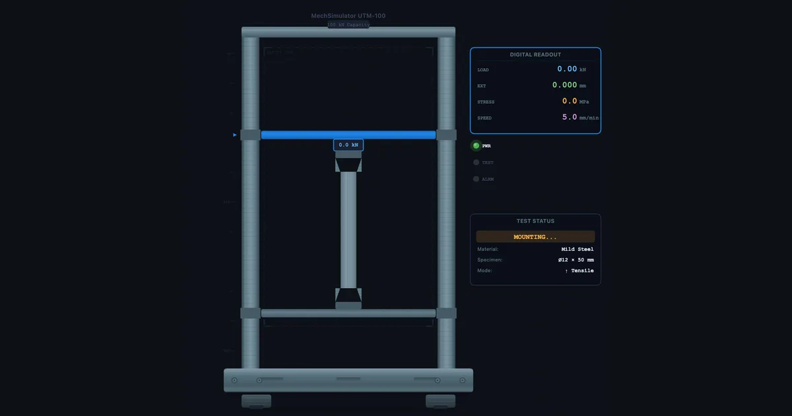
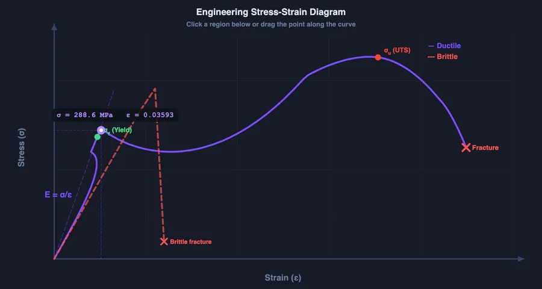

How to Read a Stress-Strain Curve — and Why the UTM Test Teaches It Better Than a Whiteboard

- A stress-strain curve has five regions: elastic (linear, obeys Hooke's Law σ = Eε), yield point (permanent deformation begins), strain hardening, ultimate tensile strength (UTS, the peak stress), and necking to fracture.
- Young's modulus is the slope of the elastic region (E = σ/ε) — about 200 GPa for mild steel and 69 GPa for aluminium; the steeper the slope, the stiffer the material.
- Yield stress (≈250–350 MPa for mild steel) is the design limit, UTS is the maximum capacity before necking, and ductility (%elongation or %reduction in area) shows how much warning a material gives before failure.
Picture this: it's week two of a Materials module and you've drawn the stress-strain curve on the whiteboard three times. You've labelled the elastic region, pointed to the yield point, explained what UTS means. The class nods. Then the quiz comes back and half the students have labelled the yield point as UTS and vice versa, with a few creative interpretations scattered in between. It's not that they weren't listening. It's that a static diagram on a whiteboard doesn't show what the material is actually doing as load increases.
That's the gap the UTM Virtual Lab was built to close.
What the Stress-Strain Curve Is Actually Telling You
The stress-strain curve is a material's biography under load. Every point on it corresponds to a real physical state inside the material — and once students understand that, the regions stop being arbitrary labels to memorise and start being logical observations.
Start at zero. As load increases, the material stretches proportionally — stress and strain rise together in a straight line. This is the elastic region, governed by Hooke's Law: σ = Eε. The slope of this line is Young's modulus. For mild steel it's around 200 GPa, for aluminium around 69 GPa. The steeper the slope, the stiffer the material. If you remove the load at any point in this region, the material springs back to its original length. Nothing permanent has happened.
Then something gives.
At the yield point, the linear relationship breaks down. For mild steel, you'll often see a distinct upper yield point followed by a drop to a lower yield point — this is caused by the sudden release of dislocations in the crystal lattice. Other metals like aluminium have a more gradual yield, which is why the 0.2% proof stress is used for those materials instead. Either way, beyond yield, the material is deforming permanently. You take the load off and there's a new, longer rest length. That's plastic deformation — it doesn't come back.
Strain hardening follows. The material stretches further and the curve climbs again, but more gradually. The crystal structure is being rearranged at a microscopic level, making the material harder to deform further. The peak of this region is the ultimate tensile strength (UTS) — the maximum stress the material can sustain.
After UTS comes necking. The specimen starts to thin at one cross-section, and even though the total load drops, the local stress at that neck continues to rise until the material fractures. The drop in the engineering stress-strain curve after UTS is an artefact of using original area (A₀) in the calculation — the true stress is still rising right up to fracture.

Five Materials, Five Very Different Curves
This is where the simulator earns its place. In a physical lab, you might test two or three materials in an entire semester — one at a time, one specimen each, hoping nobody drops the extensometer. In the virtual lab, you can switch between mild steel, aluminium, copper, cast iron, and engineering rubber in seconds and watch the curves update instantly.
The contrast is instructive. Cast iron has almost no plastic region — it fractures before it yields noticeably, making it a brittle material. Mild steel has a pronounced yield drop and a long plastic region — it's ductile. Rubber has a wildly different curve with enormous elongation at comparatively low stress. These aren't just different numbers on the same shape of graph; they're fundamentally different behaviour patterns, and seeing them side-by-side makes the concept of ductility vs brittleness click in a way that words alone can't manage.
Ask students to predict which material will have the steepest elastic slope, the highest UTS, the longest plastic region. Then run the test and see if they were right. That moment of being correct — or wrong and finding out why — is worth three whiteboard sessions.
How to Run a Virtual Tensile Test Step-by-Step
- Open the UTM Virtual Lab — navigate to the Simulate mode. You'll see a specimen gripped in the machine jaws with the load cell at the top and the crosshead ready to move.
- Select your material — choose from the dropdown. The specimen geometry updates to match realistic proportions for that material type.
- Start the test — click the Load button and watch the crosshead move. The stress-strain curve plots in real time on the right-hand panel. Watch the specimen elongate in the animation.
- Observe the yield point — the curve will level off or drop depending on the material. Some students miss it the first time because they're watching the animation; run it again and watch the graph instead.
- Identify UTS and fracture — the curve peaks at UTS, then drops to fracture. In the animation, you'll see necking occur at the weakest cross-section.
- Read off the values — yield stress, UTS, elongation at fracture, and reduction in area are all displayed in the results panel. Compare them across materials.
In Practice mode, students are given a random material and asked to identify specific points on the curve or calculate Young's modulus from the slope. It's a solid pre-lab exercise that takes 15 minutes and means they arrive at the physical UTM already knowing what they're looking for.
The Numbers You Need to Know
There are four measurements you extract from a standard tensile test. Knowing what each one means — not just how to calculate it — is what separates a student who understands materials from one who's just memorised a formula.
Young's modulus (E) — slope of the elastic region. E = σ/ε. It tells you how stiff the material is. High E means the material resists deformation under load. Mild steel: ~200 GPa. Aluminium: ~69 GPa.
Yield stress (σy) — the stress at which permanent deformation begins. This is your primary design limit. If your component will ever exceed σy in service, it will be permanently deformed. For mild steel, σy is typically 250–350 MPa.
Ultimate tensile strength (UTS) — the maximum stress on the engineering stress-strain curve. It's the upper bound of what the material can carry before necking begins. Always higher than yield stress; the ratio UTS/σy is sometimes called the strain-hardening ratio.
Ductility — measured as percentage elongation (%EL = ΔL/L₀ × 100) or percentage reduction in area (%RA). Both tell you how much plastic deformation the material can absorb before fracture. High ductility means the material gives warning before failure; low ductility means sudden brittle fracture. Mild steel might show 20–30% elongation; cast iron barely 1%.
Using the Simulator in Teaching and Assessment
For instructors running hybrid or fully online sessions, the UTM Virtual Lab handles the visual and interactive component that static slides can't provide. Here's a three-stage approach that works well:
Stage 1 — Pre-lecture warm-up. Before teaching the theory, send students to Free mode for 10 minutes to just explore. Pull the specimen to failure, see what happens, look at the curve. No instruction. Just curiosity. When you then explain the regions in class, they'll already have a mental image to attach the theory to.
Stage 2 — In-class worked example. Run a live test during the lecture. Pause at the yield point and ask: "What would happen if this were a structural beam at this load level?" Let students discuss. Then continue to UTS. Then fracture. The narrative of the test matches the narrative of the theory.
Stage 3 — Quiz mode for revision. Quiz mode gives a randomised curve and asks students to identify key points, calculate E, or compare materials. It generates a new problem each time, so it works as a self-revision tool students can run at home without supervision.
For a deeper dive into how these three modes work across all the simulators, the article on using measuring instrument simulators in the classroom covers the Free → Practice → Quiz progression in detail.
Try It Yourself
- UTM Virtual Lab — Run tensile and compression tests on five materials with a real-time stress-strain curve. Switch materials and compare curves side-by-side.
- Stress-Strain Diagram — Interactive curve with draggable cursor — explore Hooke's Law, yield, UTS, and fracture with exact numerical readouts at every point.
- Impact Testing Virtual Lab — Charpy and Izod pendulum tests across seven materials, with ductile-to-brittle transition temperature curves and fracture analysis.
Key Takeaways
- The stress-strain curve has five physically meaningful regions — elastic, yield, strain hardening, UTS, and necking/fracture — each corresponding to a different state inside the material.
- Young's modulus is the slope of the elastic region: E = σ/ε. Mild steel ≈ 200 GPa, aluminium ≈ 69 GPa.
- Yield stress is the design limit — components must stay below it in service. UTS is the material's maximum capacity before necking starts.
- Ductility (%EL or %RA) tells you how much warning a material gives before fracture — high ductility = gradual failure, low ductility = sudden brittle fracture.
- The virtual UTM lab lets students test multiple materials in sequence and see contrasting curves — impossible to do efficiently in a physical lab with limited time and specimens.
- Pre-test in Free mode, teach during test in Simulate mode, assess with Quiz mode — three stages that cover the full learning cycle.
Frequently Asked Questions
What are the key regions of a stress-strain curve?
A typical stress-strain curve for mild steel has five regions: the elastic region (linear, obeys Hooke's Law), the upper and lower yield points, the plastic region (strain hardening), the point of ultimate tensile strength (UTS), and finally the necking and fracture zone. Each region tells you something different about how the material behaves under load.
What is the difference between yield strength and ultimate tensile strength?
Yield strength is the stress at which a material begins to deform permanently — it's the design limit for most engineering applications. Ultimate tensile strength (UTS) is the maximum stress the material can withstand before necking begins. UTS is always higher than yield strength; the gap between them reflects the material's strain-hardening capacity.
How does a Universal Testing Machine (UTM) work?
A UTM grips a test specimen at both ends and applies a controlled tensile or compressive load at a constant crosshead speed. A load cell measures force, an extensometer measures elongation, and the software plots stress (F/A₀) against strain (ΔL/L₀) in real time. Modern UTMs are hydraulic or electromechanical and can apply loads from a few Newtons to several MN.
What is Young's modulus and how do you find it from a stress-strain curve?
Young's modulus (E) is the ratio of stress to strain in the elastic region — the slope of the straight-line portion of the curve. For mild steel E ≈ 200 GPa, for aluminium ≈ 69 GPa. Pick two points on the linear section and divide the stress difference by the strain difference: that ratio is your modulus.
Can I use a virtual UTM lab for engineering coursework?
Yes. The NHIT VisualLab UTM Virtual Lab simulates tensile and compression tests with a live stress-strain curve. Students can test multiple materials, identify yield point and UTS, measure ductility, and compare results — all without physical equipment. It's used for pre-lab preparation, online sessions, and exam revision.
The stress-strain curve isn't a diagram to memorise — it's a story about what happens inside a material as you push it to its limits. Once students experience that story interactively, the labels stop being arbitrary and start making sense. Run the test. Watch the yield point hit. Pull it to fracture. Then ask them to explain what they saw. You'll be surprised how much they retained.
All three simulators linked above are free, browser-based, and require no account. Open them on any device and start exploring.